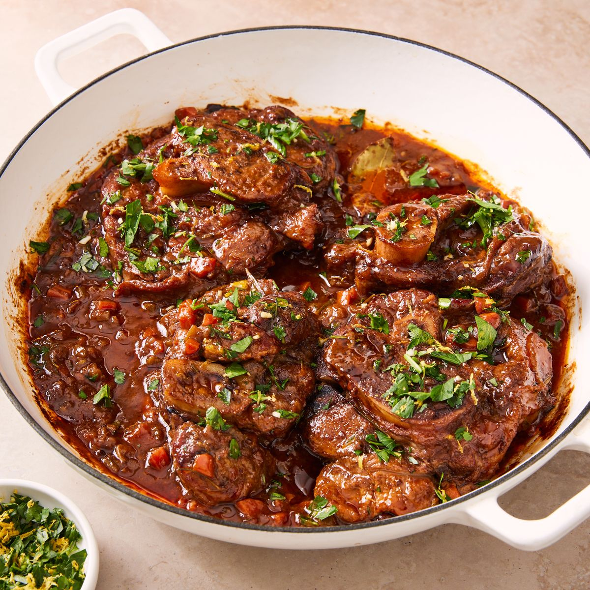

Osso Buco
Some tips and tricks:
Serve with risotto (a traditional match), mashed potatoes, or polenta, you’ll definitely want something to soak up all the deliciousness. Pair with a red wine (Italian or otherwise) for a truly romantic dinner.
Ingredients
- 6(1 ¼”-thick) crosscut bone-in veal shanks, tied with kitchen twine (about 2 3/4 lb.)
- Kosher salt
- Freshly ground black pepper
- 1/4 c.all-purpose flour or cornstarch
- 6 tbsp.extra-virgin olive oil, divided
- 1medium yellow onion, finely chopped
- 3medium carrots, finely chopped
- 2stalks celery, finely chopped
- 5cloves garlic, thinly sliced
- 2 tbsp.tomato paste
- 1 c.dry red or white wine
- 2 c.low-sodium chicken broth
- 4sprigs fresh thyme
- 2springs fresh rosemary
- 1bay leaf
Directions
-
Step
Adjust a rack to the lower third of your oven and preheat to 325°. On a large plate, pat veal shanks dry with paper towels and season all over with 2 teaspoons salt and ½ teaspoon pepper. Place flour or cornstarch on a large plate and dredge the shanks all over, shaking off any excess. Return to the plate, and repeat until all shanks have been coated.
-
Step
In a large Dutch oven, heat 4 tablespoons of oil over medium-high. Working in 2 batches, sear the shanks on all sides until golden, about 10 minutes per batch. Transfer shanks to the plate. Using a paper towel, wipe any dark bits and excess oil out of pot.
-
Step
Return pot to medium heat, add the remaining 2 tablespoons of oil. Once hot, add the onion, carrots, celery, and garlic. Cook, stirring occasionally, until softened and just starting to turn tender, about 8 minutes.
-
Step
Add the tomato paste and cook, stirring, until lightly toasted, about 2 minutes. Pour in the wine and bring to a boil. Boil until reduced by half, about 2 minutes. Add the broth, thyme, rosemary, and bay leaf, and return the shanks to the pot. Bring to a boil, cover, and transfer to the oven. Bake until the shanks are very tender, about 1 hour and 30 minutes.
-
Step
Meanwhile,make the gremolata: Combine parsley, zest, and garlic in a medium bowl. Refrigerate until ready to use.
-
Step
Remove the pot from the oven and use a spoon to remove excess fat from the top of sauce. Season with more salt and pepper to taste. Discard bay leaf, thyme, and rosemary and remove and discard the butchers’ twine from the shanks.
-
Step
Top with the gremolata and spoon juices over top to serve.